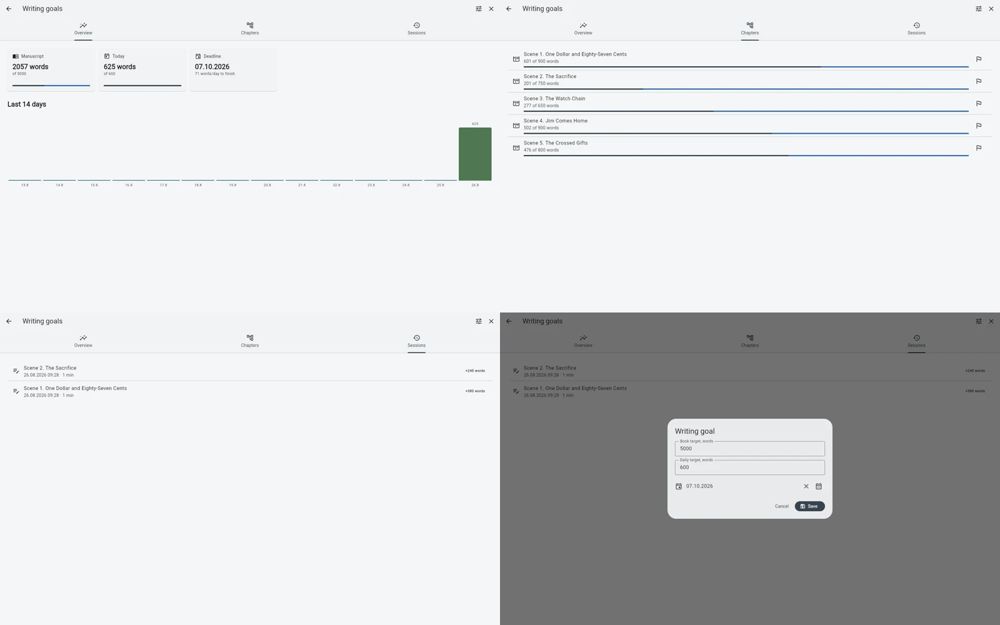
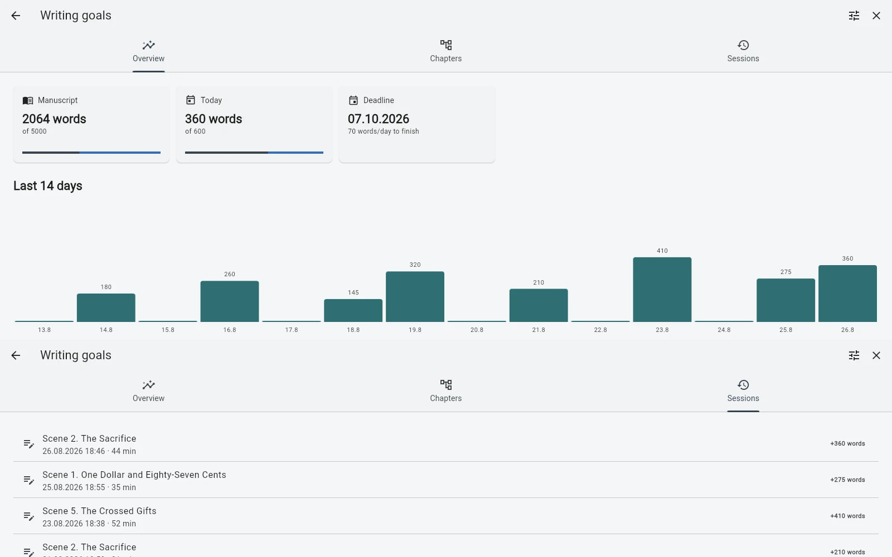

Держать цели книги и глав рядом с рукописью, а ежедневную активность и историю writing sessions использовать для понимания прогресса без отдельного трекера.
Цель — только одна часть прогресса
«Написать 80 000 слов» звучит ясно, но ничего не говорит о том, что происходило на этой неделе. Большой проект движется маленькими единицами: закончена глава, переписан сложный раздел, несколько дней шла стабильная работа, потом возникла пауза.
Когда прогресс живёт в отдельной таблице или habit tracker, автор поддерживает ещё одну систему рядом с книгой. B-Maker оставляет базовые сигналы прогресса внутри самого проекта.
Цель книги задаёт направление
Цель на уровне книги даёт проекту приблизительную точку назначения. Она не означает, что финальная рукопись обязана попасть точно в заданное число. Это ориентир: мы всё ещё в начале, примерно в середине или уже приближаемся к ожидаемому объёму?
Важно не само число, а его отношение к рукописи, которая действительно существует.

Цели глав помогают, когда книга неравномерна
Длинные рукописи редко сбалансированы. Одной главе нужны 8 000 слов, другой достаточно 1 500. Локальная цель позволяет каждой части книги иметь своё ожидание вместо предположения, что все разделы должны быть одинаковыми.
Особенно это полезно при редактуре, когда вопрос звучит уже не «какого объёма книга?», а «почему именно эта часть всё ещё недоработана?»
Ежедневная активность отвечает на другой вопрос
Цель показывает, куда вы хотите прийти. Активность показывает, происходит ли работа. Это разные вещи, потому что письмо нелинейно: в один день слова добавляются, в другой — заменяются или исчезают.
Активность полезна как контекст, а не как оценка. Медленная неделя может быть проблемой, а может оказаться неделей, когда вы наконец решили главу, которая тормозила весь проект.
История writing sessions придаёт процессу форму
История сессий связывает прогресс с конкретными периодами работы. Вместо смутного ощущения «я много работал над книгой» видно, что проект складывался из множества отдельных заходов к тексту.
Задача не в том, чтобы превратить автора в сотрудника с таймшитом. Задача — сделать собственный ритм достаточно видимым, чтобы его можно было заметить.

Не позволяйте измерению стать самой работой
Метрика полезна только пока она дешевле проблемы, которую решает. Не нужно готовить dashboard перед тем, как начать писать. Цели и сессии появляются позже — когда проект вырос настолько, что сам прогресс стало трудно ощущать.
Это тот же принцип постепенного усложнения, что и в остальных частях B-Maker: сначала текст. Измерение — когда оно действительно становится полезно.
Связанные истории
Сначала пишите · Пишите по главам. Читайте всю рукопись. · Что программа должна проверить перед публикацией?
Сделайте прогресс видимым, но не превращайте его в продукт.
Сначала пишите. Цели и историю сессий подключайте тогда, когда большой проект начинает требовать более ясного ощущения движения.